← Overview · All areas · Reading scope
Evidence and route gaps
Coverage: the text opening, gate entry, first-corridor exits, Brick Hallway doors, and the shared Alph and Ralph opening conversation. The Alph and Ralph check starts from a controlled room load; its connecting journey remains open. Local checks continue through the Wall of Hands and the Stone Corridor’s first door, archway, guarded-door refusal, and ladder. The guide is a set of checked local routes; the controlled guard-room setup leaves a gap in a complete journey.
Code links sit beside the mechanic they explain. Numbered notes open the source register. Map-pin icons open the city workflow or a room capture. “Sources and checks” holds the verification details.
Every area of the maze
The first seven areas are explained, in the order a player meets them. The Brick Hallway does not yet lead to the guards’ room, and no way past the Stone Corridor’s guarded door is known. The other fifteen are read from the code and one capture each; none has been played through. Choose an area to see how you reach it, what you do there, and how it is passed.
 1. The cityExplainedGet into the cinema
1. The cityExplainedGet into the cinema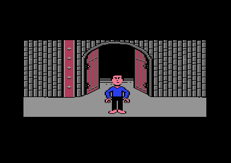
2. The entrance gatePartly explainedEnter the maze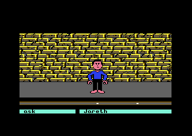
3. The first corridorPartly explainedChoose an opening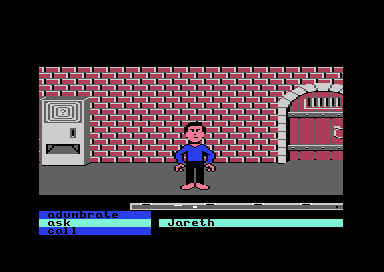
4. The Brick HallwayPartly explainedOpen the doors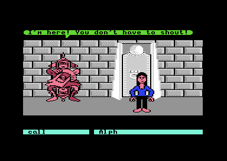
5. Alph and RalphPartly explainedLearn which doorway to take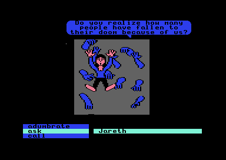
6. The Wall of HandsPartly explainedGet out past the hands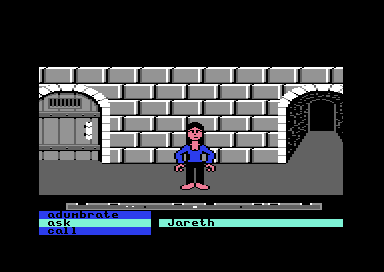
7. The Stone CorridorPartly explainedReach the ladder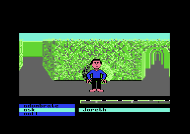
The Hedge Maze: the goblinRead from codeDeal with a goblin that reacts to what you do, and find the doors and walls of the hedge The Persecution of LudoRead from codeFree Ludo from the two goblins that hold him
The Persecution of LudoRead from codeFree Ludo from the two goblins that hold him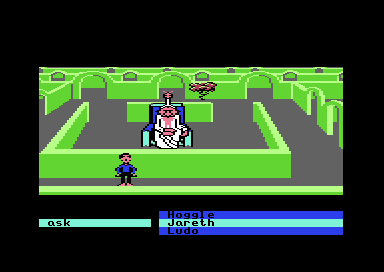
The Wise Man’s GardenRead from codePay the Wise Man, then walk the ring of nine cells his hint describes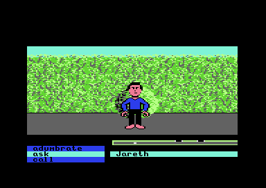
The Hedge Maze: Ludo and the rocksRead from codeCall Ludo, let him make a racket, and collect the rocks that roll in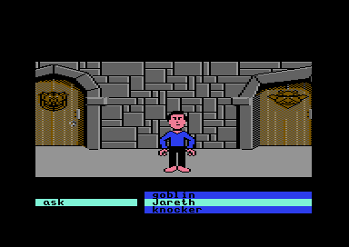
The Door KnockersRead from codeClose a door so its knocker can talk, and feed or open the two knockers The Forest: Firey and the thrown headRead from codeTrade a rock video to Firey for his body parts, and throw his head to see where each way leads
The Forest: Firey and the thrown headRead from codeTrade a rock video to Firey for his body parts, and throw his head to see where each way leads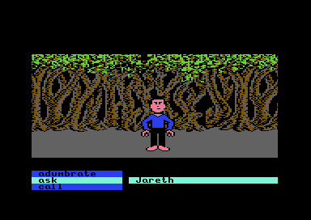
The Forest: the second stripRead from codeCross a second forest strip that uses the same objects as the first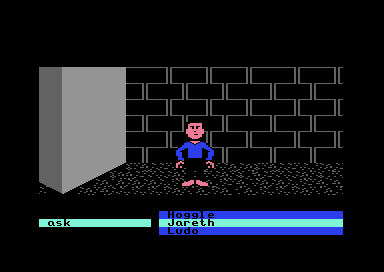
The Stone FacesRead from codeHit a face to get a hint, and learn that most of them warn you off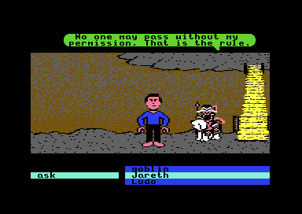
The Bog of Eternal StenchRead from codeReach Sir Didymus’s ladder, past the same goblin and Ludo code as the first maze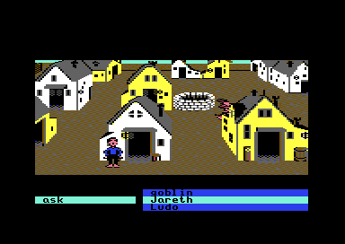
The Goblin VillageRead from codeKeep clear of the goblins that chase you through the village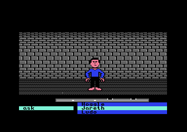
The UndergroundRead from codeBlock the door with a log, and watch a patch of the wall change colour as you pass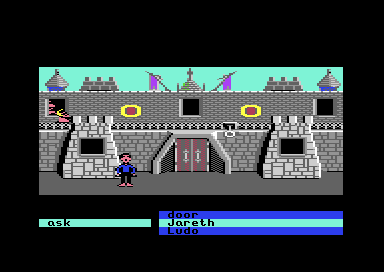
The Castle of the Goblin KingRead from codeGet through the castle door while the nerd talks, Ludo shouts, and rocks roll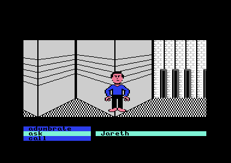
The Secret CorridorRead from codeOpen the locked door at the end, without wearing the disguise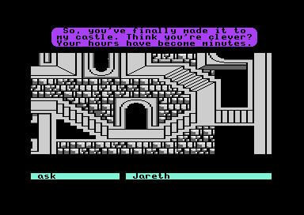
The Upside-Down RoomRead from codeReach Jareth and hit him with the crystal ball, with the nerd’s help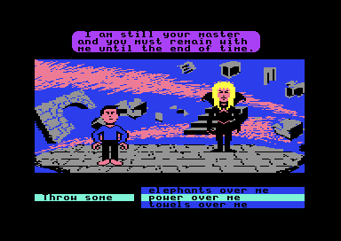
The Final ConfrontationRead from codeAnswer Jareth with a command, and stay on the ledge
Area 1 · The text adventure
The text adventure
Labyrinth begins with a text adventure. You name your character, answer the setup questions, and explore the streets outside a movie theater. Two word wheels hold the available actions and objects. Entering go home takes you from the sidewalk to a room with a television and a camcorder.2 ($9114)
The playable opening, before the first command. The active wheel shows neighboring choices around the selected word.
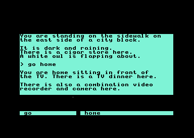
The result of go home. Both pictures were captured from the supplied disk image.
Areas: follow the city’s command routes →
How the opening’s text is stored and drawn →
The city’s command routes
Commands depend on where you are and what you carry. The ticket counter blocks entry without a ticket; the popcorn stand adds choices about payment, change, and the dropped nickel. Follow these connections on the city workflow. The Controls page explains how to enter a command.
GO HOME checks where you are
The command stays the same, but its result depends on your location. On the street, go home selects the home location. At home, the command replies “You are home!” At the ticket counter, the command says you cannot go home from there. ($9114)
Sources and checks
The opening’s handler at $9114 reads the location’s entry from $AA58 and $AA66. A zero high byte selects a destination; another value selects a reply. All 14 table entries are checked against the original handler. Destinations are shown before their arrival routine runs.
The ticket changes GO EAST
At the ticket counter, go east checks whether you carry a ticket before consulting the movement table. Without a ticket, the reply is “You can't enter without a ticket.” With one, the table selects the lobby destination. ($90F4, $9327)
The purchase follows a shared payment path. Giving the dollar bill with at least five dollars available deducts four dollars in the ticket handler, then another dollar in the common give routine. The girl hands over one ticket.
Sources and checks
The east handler at $90F4 checks the ticket entry at $6740. The purchase path starts at $9327 and uses $087F to remove the final dollar. The eastward table decision is checked for every location index and every ticket byte; the purchase is checked with one through nine dollars. Arrival effects remain separate.
Two dollars for cold popcorn
At the popcorn stand, giving a dollar bill can spend two dollars: one in the counter’s branch and one in the shared GIVE routine. The first purchase adds a box of popcorn. After that, a purchase flag makes the woman refuse another dollar payment, leaving your money alone. ($93E1, $087F)
Sources and checks
The dollar-payment branch at $93E1 checks $9688, updates the dollar and popcorn inventory entries, and reaches the shared debit at $087F. The example is checked against the original GIVE handler with one through nine dollars and every purchase-flag byte. The response mentions change and a dropped nickel; the change collection example below follows their collection.
 The popcorn counter responds to a complaint.
The popcorn counter responds to a complaint.
Two complaints recover the missing quarter
The popcorn menu asks $1.25, but the woman takes two dollars and leaves only two quarters in change. The first complaint gets an excuse. The second produces another quarter. Three quarters in change restore the advertised $1.25 price. Further complaints produce a rebuke. ($95B7, $927C, $943A)
This example starts just after the purchase. TAKE collects the available quarters together, then exposes the dropped nickel. Complaining before collecting the change puts three quarters on the counter; complaining after collecting it adds one more to pick up.
The starting inventory includes one nickel from character setup. The dropped nickel is an additional coin. This example follows a route that keeps the starting nickel.
The nickel changes the later offer
Returning a nickel after picking up the dropped one gets the woman’s thanks. The game remembers the return. While the teenager in the main theater accepts popcorn, keeping the dropped nickel makes him take the whole box. Returning it makes him take a handful and leave the box in your inventory. ($9485)
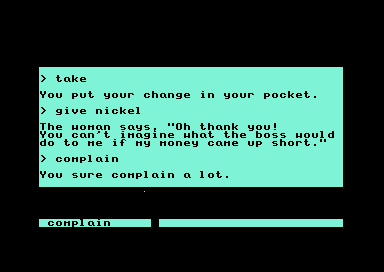
Returning the nickel gets the woman’s thanks. A further complaint gets “You sure complain a lot.”
Sources and checks
TAKE at $927C, the complaint branch at $95B7, and the return branch at $943A update the pickup slot, quarter count, and nickel flags. The later offer checks $0575 at $9485. Counter sequences were replayed with ordinary inputs in VICE. The example is also compared with the original routines, including both later popcorn-offer branches; that later comparison isolates the offer before the movie transition.
See the counter route on the city workflow →
Browse the opening’s stored replies →
01 · City routes
The city as a workflow
This diagram puts those routes on one map. Select a place or an arrow to see its description, condition, and result. Solid arrows move between locations. Dashed arrows show actions at the counter. The dotted arrow follows the coin choice into the later theater encounter. ($90F4, $9327, $95B7)
A route through the cinema, with optional change collection. Details appear below the diagram; on narrow screens, scroll the diagram sideways. The counter actions can be taken in either order. This is a guide to verified decisions, rather than a complete playable opening.
Sources and checks
Movement selections are checked against the original direction handlers. The five-dollar ticket, two-dollar purchase and counter changes have original-code tests; the counter route also has live command observations. Later conversation timing and the graphical maze remain outside this diagram.
Try the counter’s change and nickel choices →
How the text is stored and drawn
Scope: the opening’s dictionary, two text passages, 127 stored replies, and its monochrome character shapes. The graphical rooms’ scenery and animation remain separate work. Address links open the opening’s Source page.
01 · Character graphics
The opening’s letters
The dialogue’s letters are eight pixels wide and eight high. Each stored byte supplies one row, with a set bit lighting a pixel. The same font holds graphical symbols and blank slots alongside the letters. ($D000)
Sources and checks
The RAM font at $D000, extracted from the opening’s saved state. Every embedded byte is checked against the source listing; all 256 glyphs are compared with the site’s C64 character renderer. The viewer shows monochrome shapes.
View the opening’s letter shapes
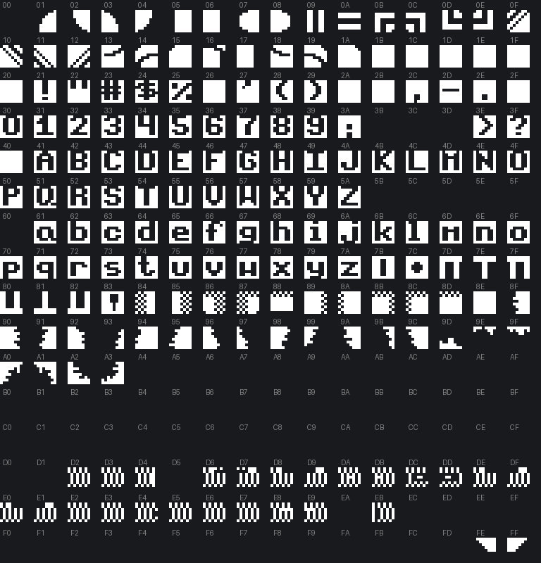
The opening’s glyph sheet. Digits and letters occupy their ASCII positions; other slots include shapes and blank cells. The source listing documents the identified font data.02 · Text storage
Words stored once
Labyrinth can insert a dictionary word into a sentence using two bytes: a format code and a word number. The format can give the word a capital initial or add a following space. Choose a word to see the stored instruction expand. ($67B5, $68D4)
Stored bytes:
A visible ␣ marks a space in this display. These words come from the opening’s dictionary; the controls show combinations independently of a particular sentence.
A passage, piece by piece
The opening mixes ordinary letters with dictionary references. Step through a stored passage to see which words come from the dictionary and where the game starts a new line. ($9867, $98A7)
Sources and checks
Passages at $9867 and $98A7, checked against the stored bytes and the game’s parser at each step. Line breaks follow the stored instructions; the display uses a browser font.
Sources and checks
The $67B5 parser chooses the format; $68D4 reads the word through the pointer tables at $D800 and $D900. All dictionary entries and four formats were checked against the game’s routine in a 6502 simulator: 1,024 cases.
03 · Stored replies
Replies from the city
The city’s replies mix ordinary letters with dictionary words. The same format carries street descriptions, shop transactions, and the beggar’s one-word hints. All 127 opening text streams are available below. Search for a word or hexadecimal start address, then choose a reply to read its expansion. ($67B5)
Sources and checks
Text records at $7910, $968E, and $9816 through $A9E7, checked against the original text parser at $67B5. The records include the menu asking $1.25 for popcorn, while the payment branch spends two dollar bills and its reply describes change. The counter interaction follows coin collection and the missing-quarter refund. Pronoun substitutions reflect the captured setup; the game can change them.
Area 2 · Entry mechanic verified · Other gate behavior remains open
The entrance gate
After the cinema, the graphical adventure places you outside the gate. Holding up from the starting position begins the entry sequence. Moving to either side first leaves the character against the foreground boundary.4 ($8D92)
The movement map divides the approach into horizontal columns. In the four columns shown here, the doorway column permits a deeper approach than its neighbors. Reaching depth 50 starts a script that changes the gate state and queues the first corridor. The diagram shows those world-coordinate checks, rather than a rectangle painted over the screen.
The gate before any movement. With no input, the player stays here.
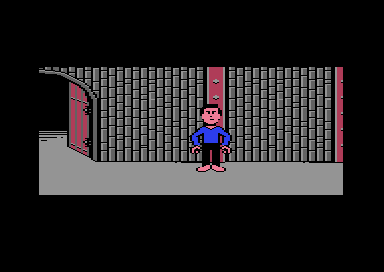
Moving right before approaching leaves the player beside the doorway, at depth 24.
The doorway boundary
Walking straight up to the gate reaches depth 51 and starts the scripted sequence. Approaching from the left or right stops the player at depth 24. The sequence then queues scene 2, which opens with a title card and the first brick corridor.
Sources and checks
The classifier at $4171 reads map cells at $0600, translates their type through $073E, and selects the depth bound from $41F0. The gate threshold is at $8D92. Gate stage $8CC0 requests sound 5, waits through four sixty-tick intervals, and queues scene 2 for the resident dispatcher at $59AF. The diagram’s lookup and threshold are compared with the original code across every low horizontal-coordinate and depth byte. The gate listing is partial; its remaining code, art and shared-engine ownership remain open.
See the corridor reached through the gate
The first graphical corridor, reached by walking up through the gate. Its command wheels are visible below the scene.A speech stored beside the gate script
The same resource holds seven lines addressing the cinema audience, including the player by name. Choose a line to read it. The player name is shown as ANON for privacy. In a nonzero scene, the phase-zero branch skips the seven speech records and starts phase 7. ($4171, $8D92) ($8E09, $8CD8)
The script keeps a phase and a countdown. When a countdown expires, it loads the next delay and advances the phase. Phases 0–6 select these messages; phases 7–13 continue the actor and gate sequence. Pressing fire on joystick port 1 sets the latch that can jump an early phase to 7. At phase 14, the script goes directly to checking the player’s approach depth.
Sources and checks
Message selection at $8E09, pointer tables at $8ED4/$8EDB, countdowns at $8EC5, and sequence dispatcher at $8CD8. The port-one sampler at $19AE supplies the fire latch at $1993; ordinary press, hold and release were checked live. The reader below normalizes whitespace and omits the stored formatting controls. All seven texts are checked against the original parser; phase/countdown decisions are checked separately against the original dispatcher.
03 · The Labyrinth
The first corridor
The first corridor stretches past a repeating brick wall. Its movement map divides the wall into 64 columns. Eight columns permit a deeper approach and allow the exit routine to choose an entry into the Brick Hallway. ($4171, $4115)
The corridor reached through the entrance gate. The strip below shows movement columns in world coordinates.
Where the openings lead
Choose a column, then change the exit variant. Each stored opening leads to the Brick Hallway. The variant changes the entry position within that room. ($4115)
Bold, underlined columns are openings; the other columns stop the approach. The single corridor strip wraps onto four rows for display. Each cell spans 64 world units.
Through the first opening
The first opening leads into the Brick Hallway. The exit selects entry position 35, which the room loader converts to world X=2272, with the player at depth 6. ($543A)
Compare departure and arrival
Departure: walk right to the first opening, then approach the wall.Arrival: the naturally loaded Brick Hallway, after 60 frames without movement input.
The continuous-mode placement rule starts the player halfway through the selected column: entry × 64 + 32. The variant selector above includes this calculation.
The exit chooses an entry position
The exit uses a changing random state to select one of four route-table variants. Other activity advances that state, so the selector shows possible outcomes rather than predicting an outcome from walking time. Entry numbers identify positions inside the destination room. ($4115)
Evidence and limits
The natural corridor capture uses map mode $0343 = $FF and column mask $3F. Classifier $4171 reads the map at $0600, translates its cell through $073E, and obtains the depth limit from $41F0. Ordinary wall approach stopped at depth 24. An ordinary approach at world X=546 reached the first opening at depth 32 and called exit routine $4115. The dispatcher requested scene 3, entry position 35. The ordinary route loaded the Brick Hallway; player placement at $543A used entry 35 and mode zero to produce X=2272/depth 6. The entry request was then cleared.
The route thresholds begin at $074E; scene and entry banks begin at $077E and $078E. All eight openings select scene 3, the Brick Hallway, across all four banks. The page’s classifier and route lookup are compared with the original routines in the committed test. The other seven openings have code-checked destinations; their complete walking routes remain open.
04 · The Brick Hallway
The Brick Hallway
The Brick Hallway is a wall of doors. Its map holds fifteen door cells in a repeating 64-column strip, three open and twelve closed, and the player’s position decides which door a command reaches. The commands below start from two positions: the arrival and the neighboring door.
OPEN DOOR checks the map cell at the player’s position. At the arrival position the command replies “Nothing happens.” Walking right to the neighboring door and using the same command opens it. ($9053)
Arrival: world X=2272, depth 6.
This example reproduces the command decision and map-cell change. Follow the route through this door.
The map cell changes when the door opens
The closed door’s cell has value 7. OPEN DOOR replaces that value with 6, which the room’s type table treats as an open door. Using OPEN DOOR again selects “It's already opened.” ($9053)
Sources and checks
The command pair at $8B94 selects handler $9053. Its query at $0998 returns the cell nibble and translated type. Type 2 uses replacement table $071E, then mutation routine $58C8 records the new cell and a zero scene request refreshes the view. The handler also requests sound 1 and increments $0569; the sound’s audible identity remains open.
Ordinary input reached world X=2348, depth 24. OPEN DOOR changed column 36 from 7 to 6, while current scene stayed 3. The handler and mutation routine each recorded one live hit. The page’s command decision is compared with the original handler, including the actual initial positions and the repeated-command branch. This checks opening the door, not the destination behind it.
Closing a door takes one off the count
CLOSE DOOR shuts the neighboring door and reduces the opened-door count from 4 to 3. Opening that door again restores 4. Repeating CLOSE DOOR on the closed door or OPEN DOOR on the open door leaves the count alone. ($8E9E, $9053)
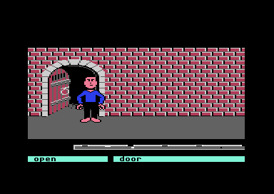
Starting state: the door is open and the opened-door count is 4.See how the guards respond to the opened-door count →
Sources and checks
The CLOSE DOOR pair at $8B2E selects $8E9E. In negative map mode, the handler accepts translated type 3 and uses the closing replacement table at $072E. At this door, cell 6 becomes 7. The handler requests sound 2 and decrements $0569. A type 2 door instead selects “It's already closed.”
Ordinary input from the naturally opened column-36 state ran CLOSE, CLOSE, OPEN, OPEN at world X=2348, depth 24. The count went 4→3→3→4→4; the cell went 6→7→7→6→6. Each command had a positive handler hit. The mutation routine ran only for the first close and the reopening. The original handler is compared over every cell/map-mode byte, with full classifier/mutation checks for the displayed cycle.
The example models the commands and counter, with live captures for each result. Walking and the other actors are not simulated. Other door commands, complete room crossings, and disk persistence remain open.
The door leads elsewhere in the same hallway
Holding up through the opened door brings the player to another part of the Brick Hallway. The door at column 36 arrives at column 12. The room stays the same while the player’s entry position changes. ($4115, $543A)
Departure: the neighboring door is open.
This steps between two pictures of the route.
Route evidence and limits
The exit routine $4115 selects region 11 for column 36. Its selector uses bits $60 of state $0500 to choose a route bank. Every bank requests scene zero: banks 0/1 choose entry 12, and banks 2/3 choose entry 44. The meaning of that state byte remains open here.
With current scene 3, a zero request takes the retained-room branch at $50EA and placement at $543A. The live route selected entry 12, producing world X=800 and depth 6. After the view refresh, current scene remained 3 and the pending request was cleared. Entry 44 is code-checked; its ordinary journey remains unverified. Return travel and other door routes remain open.
The arrival panel fails the door check
At column 12, the spiral panel looks door-shaped. ASK DOOR replies “There's no door here.” OPEN DOOR replies “Nothing happens.” The command handlers use the map’s type for this position when deciding what they accept. ($8DD1, $09E9)
Choose a command to compare its recorded response.
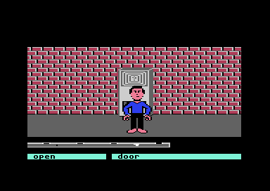
Destination: column 12 in the Brick Hallway.The door prerequisite accepts map types 2 and 3. The arrival panel’s cell translates to type 11, so ASK DOOR stops at the prerequisite. OPEN DOOR has a separate type check and selects its fallback response at this position.
Sources and checks
The ASK DOOR pair at $8B0C selects $8DD1. Its prerequisite $09E9 calls the player-cell query, then accepts only types 2 and 3. On rejection it removes the caller’s return address and queues the message at $0D49, bypassing the rest of the handler. The arrival map cell at $060C is 1, translated to type 11.
Ordinary input at world X=800, depth 6 produced both displayed replies, with one dispatch for each command and one prerequisite hit for ASK DOOR. Up for 300 frames reached depth 24, with 30 movement hits and zero exit/loader hits. The original prerequisite and caller are checked for every type/mode byte, including both page commands at the observed position. These checks do not establish the behavior of other actions or a complete return route.
Trying the way back
The Brick Hallway arrival faces a wall cell. Holding up from that position approaches the brickwork; holding down moves into the foreground. Both movements stay in the Brick Hallway.4
| Input from the arrival | Frames tested | Final depth | Room |
|---|
| None | 120 | 6 | Brick Hallway |
| Up | 300 | 24 | Brick Hallway |
| Down | 300 | 0 | Brick Hallway |
Compare the forward and backward approaches
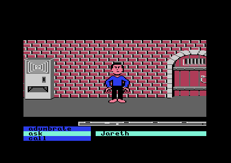
Up: the player stops at depth 24, against the brickwork.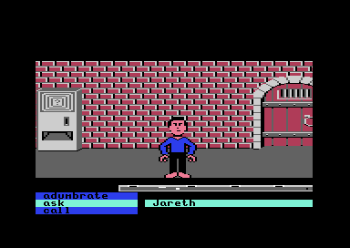
Down: the player reaches depth 0 and stays in the room.Neither direction leads back to the first corridor, and no other return route has been found.
See the OPEN DOOR response
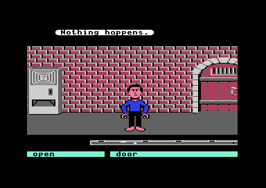
The command was executed at the arrival position, world X=2272 and depth 6.Checks behind these results
Each trial restored the same naturally reached arrival. The movement routine ran in all three movement trials; neither the generic exit routine nor the scene loader was called. The command trial recorded one command dispatch. These observations apply to this position and these inputs; other positions and actions remain untested.
05 · Alph and Ralph
Alph and Ralph
Alph and Ralph guard the two doors of their room, Alph the left one and Ralph the right. One doorway leads on and the other ends the game, and a random bit decides which. Alph comes out when called beside the left door. CALL ALPH produces “I'm here! You don't have to shout!” ASK ALPH then begins a conversation about the two doors. ($90C3, $8FA8)
This area starts inside the guard room, with the female avatar. The crossing from the Brick Hallway has not been walked.
The first three replies
Alph warns that one door leads to the center of the Labyrinth and the other to certain death. A second question gets a demand to open every door in the Brick Hallway. The third gets “We're not saying another word.” ($8FB1)
CALL ALPH beside the left door.
The opening exchange advances through three replies. Once the third reply is selected, the conversation index stays there. Later dialogue has a separate progress condition; the demonstration covers this opening exchange.
Sources and checks
The ASK ALPH pair at $8B0C selects $8FA8. After the presence check, the shared conversation at $8FB1 uses index $8F04 and split pointer tables $8FFE/$9001. With progress byte $0569 below 15 and nonnegative $8F0C, valid opening indices 0, 1, and 2 select these three replies. The routine keeps index 2 after the third question. Other seeded indices are outside this example.
From the controlled reference state, moving left reached world X=99, depth 6. CALL ALPH and three ASK ALPH commands recorded one call-handler hit and three ask-handler hits; the conversation index became 1, 2, and 2 while progress stayed 3. These pictures are live captures. The page’s three transitions are compared with the original caller across all progress values below 15, and the reply texts with the original parser. Ralph’s conversation, the later progress branch, and the outcomes behind the doors remain open.
Changing speakers keeps the conversation’s place
Ralph answers CALL RALPH beside the right door. Starting with Ralph gives the same three opening replies as starting with Alph. Asking both characters shares one conversation: after Alph gives the warning, Ralph’s next answer is the request to open every door in the Brick Hallway. ($8FAE, $90CC)
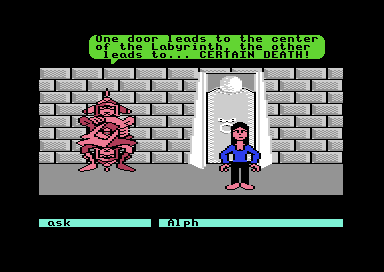
Alph has given the first reply.The example begins after Alph’s first answer. CALL RALPH brings Ralph out beside the other door. ASK RALPH then continues with the second answer.
Start the exchange with Ralph instead
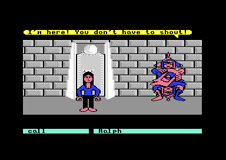
CALL RALPH: “I'm here! You don't have to shout!”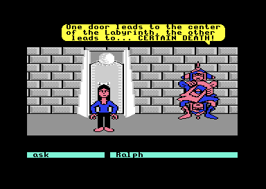
The first ASK RALPH gives the same warning as Alph’s first answer.Sources and checks
ASK RALPH at $8FAE calls its own presence check, then joins Alph’s conversation at $8FB1. Both use $8F04 as the opening reply index. CALL RALPH at $90CC preserves the index.
The fresh Ralph trial reached world X=220, depth 6 and recorded one call-handler hit and three ask-handler hits. The separate speaker-switch trial began after Alph’s first answer, moved to X=225, depth 6, and recorded one CALL RALPH and one ASK RALPH hit. The shared index stayed 1 through the call, then became 2 on the question. These were ordinary inputs inside the controlled reference room; entry from the Brick Hallway remains unverified.
The comparison runs both original ASK handlers with their real presence-check branches, intercepting the distance query with an accepted door-side state. It also checks CALL RALPH for all 256 query-result bytes at each valid opening index. These checks cover reply selection and shared state, rather than the distance producer or the later puzzle.
The next reply waits for a door count of 15
The guards’ request leads back to the Brick Hallway. Its map has fifteen door cells: three open and twelve closed. The opened-door counter starts at three. Opening a closed door adds one; closing it removes one. Repeating a command on a door already in that state leaves the count alone. ($8FBD)
At count 14, Alph keeps refusing. At count 15, the next question gets “Thanks for opening those doors! It gets kind of stuffy in here!”
Choose a count, then ask Alph.
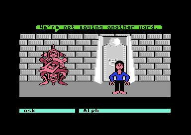
Baseline: Alph has given the third opening reply.Each command starts from the same refusal, with only the door counter changed to 14 or 15.
Trying OPEN DOOR twice
The checked Brick Hallway door raised the count from 3 to 4 when it opened. Repeating OPEN DOOR at that door replied “It's already opened.” and kept the count at 4. Read how the map cell changes.
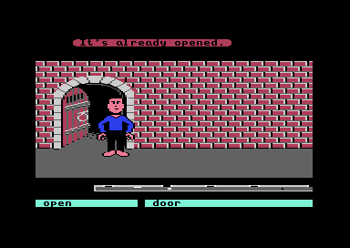
The repeated command left both the open door and count 4 unchanged.Sources and checks
The new-game initialization at $575A sets the counter to 3. The Brick Hallway map and its type table contain three open-door cells and twelve closed-door cells in the repeating 64-column strip. Its OPEN DOOR handler increments the counter on the closed-door path. The repeat-command trial recorded one handler hit and zero mutation hits.
In this room, $8FBD compares $0569 with 15. At or above 15, a negative acknowledgement byte $056B causes the guard to store the count and queue the thanks at $9C28. These comparisons restore acknowledgement $FF, reply index 2, phase 1, and nonnegative $8F0C before each command. Count 14 retained acknowledgement $FF; count 15 stored 15, with one acknowledgement-write hit. Both trials recorded an ASK ALPH hit.
The page’s reply selection, conversation index, and acknowledgement are compared with both original ASK handlers for every byte value of the count and valid opening indices 0–2. The real presence checks run with an accepted distance query supplied. Text is expanded with the original parser. Later dialogue after acknowledgement remains outside this example.
After the thanks, Alph leaves the choice to you
After the thanks, the next question gets “Figure it out for yourself.” Asking again gets the same reply. ($9004, $9ABD)
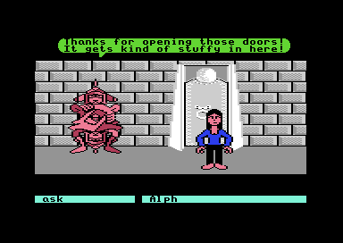
This continues the count-15 conversation above.
Sources and checks
After the thanks, the acknowledgement is 15, the conversation index is 2, and phase $056A is 1. The next ASK reaches $9004. This branch preserves index 2 and selects “Figure it out for yourself.” because the local flag $8F13 is $FF. Three ordinary follow-up commands reached this branch, keeping the count, acknowledgement, phase, and index unchanged.
The branch has other responses: an index of 0 selects the warning about the two doors and advances to 1. Otherwise a zero local flag selects “Sorry, we're not sure which is which. Open the door and find out for yourself.” Opening the left door changes that flag and selects this reply. The example above keeps the original closed-door state, with index 2 and flag $FF.
The reply decision is compared with the original phase-one branch for all 256 index values and all 256 flag values. Both ASK handlers are also checked through their accepted presence branches for indices 0–2 and every flag value. The two new texts are expanded with the original parser. The controlled doorway routes and later conversation checks follow below. Ordinary phase progression remains open.
Opening the door changes Alph’s answer
After the thanks, opening the left door gets a different answer from Alph: “Sorry, we're not sure which is which. Open the door and find out for yourself.” Close the door and ask again, and “Figure it out for yourself” returns. ($92B3, $9273, $9004)
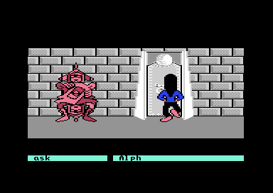
The sequence starts after walking closer to the left door, continuing from the count-15 thanks.
Sources and checks
The approach reached X=99, depth 24. OPEN DOOR at $92B3 changed the left map cell from 1 to 2 and local byte $8F13 from $FF to 0. ASK ALPH then selected the unsure reply. CLOSE DOOR at $9273 restored cell 1 and byte $FF; the next question selected “Figure it out for yourself.” Each door handler ran once, each question ran once, and the map mutation ran twice.
The Brick Hallway counter stayed 15, its acknowledgement stayed 15, and the conversation stayed at phase 1 and index 2. The local door byte controls these two replies independently of that Brick Hallway count. Opening from depth 6 instead replied “You're not close enough.” The checked left-door entry continues to The Wall of Hands. The other door’s outcome, later phases, and a complete ordinary journey into this room remain open.
The page’s left-door change is compared with the original OPEN/CLOSE handlers for every byte value of the local flag, both captured cell states, and all depth values. These checks run the real map query, proximity test, and mutation routines, intercepting sound and message output. The four-step conversation is compared separately through the real ASK presence paths, using an accepted distance result. The earlier conversation check expands the two texts with the original parser.
Through the left door to The Wall of Hands
Walking through the opened left door gets “How did she figure it out?” The sequence then advances the guard puzzle to its next phase and loads The Wall of Hands. ($8DDF, $8E9E)
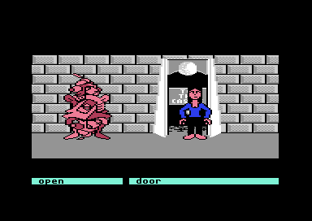
This route continues from the count-15 setup above, with the door selector at 1. The example steps through its recorded stages.
Sources and checks
The route began at X=99, depth 24 with the left door open. Up input reached depth 45 at X=96. The guard displayed the entry reaction, completed the successful countdown branch, and advanced $056A from 1 to 2 at $8E9E. A separate continuation recorded one phase-advance hit and one loader hit. The generic exit handler did not run during the initial approach.
The loader selected scene 5 and entry 1, displayed “The Wall of Hands,” and returned with the player at X=84, depth 6. After 60 more frames, the scene remained 5 and the arrival capture showed the hands. The code and interactions inside that room remain unanalysed.
At $8DDF, column 1 with a nonzero door-selection byte takes the continuation used here. The decision is checked for every byte value of column and selector; other values are code comparisons, rather than live route claims. Phase advancement is checked for every phase byte. A nine-call successful countdown check retains the original sound choices and delay call, while intercepting their effects. The reaction text is expanded with the original parser. The complete ordinary journey to the guards, the alternate entry outcome, and later puzzle phases remain open.
06 · The other doorway
Through the other door
When the selector is 1, the right doorway takes the losing path. OPEN DOOR changes its map cell to 3. Walking through it produces “You are falling down an endless tunnel,” then “Ok, we lied. It wasn't endless,” followed by the loss panel. ($8EAE, $8EC1, $9F44)
Step through the recorded route. The selector is 1 throughout.
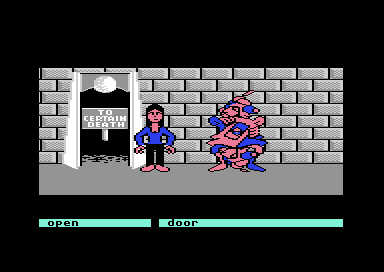
Sources and checks
The entry-choice routine selects the alternate branch for captured column 3 and selector 1. That branch sets outcome 1 and starts the nine-count sequence. At its end, the game queues the two messages and the loss description. The recording stops at the game’s own instruction boundaries for the completed messages, then allows the loss panel to finish drawing. Original-code checks cover all entry-choice bytes, the alternate countdown, its requests and all three text expansions. The original emulator state was restored. The selector initializer is checked below; other full traversals and restarting after the loss remain open.
07 · Choosing the door branches
A random bit chooses the doorway
Room setup advances the random state and stores one bit from the result. A stored 1 selects the continuation branch for the left doorway and the losing branch for the right; 0 reverses those code choices. The recorded doorway routes above both use 1. ($8F15, $8F06, $8DDF)
The setup guard lets this happen when its byte is negative, then changes that byte to zero. Calling setup again with a nonnegative guard returns immediately. In the captured entry, the chosen bits stayed unchanged over 240 idle frames while the random state advanced.
The setup draws two random bits. The first chooses the doorway; the second also chooses a later answer.
Sources and checks
The first call stores bit 0 of its returned high byte at $8F06; the second stores another bit at $8F07. Each call advances the 16-bit random state as (37 × state + 17) modulo 65536. The page function is compared against the original setup prefix and random generator for all 65,536 states. Every byte value of the setup guard is checked for its early-return or initialization path. The live entry has guard $FF, state 63287 and chosen bits 1/1; controlled states 0 and 7 give 0/0 and 1/1. The saved entry is a controlled room load; ordinary return-visit behavior remains unverified.
08 · Later conversation
The second bit changes an answer
The later conversation introduces the guards’ claim that one always lies and the other tells the truth. Its fourth answer points to either the castle or certain death. The choice compares the two stored random bits: equal gives the castle answer; different gives the death answer. ($9087, $90A6, $90B9)
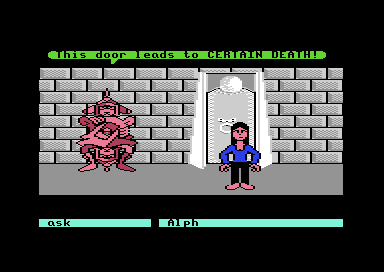
Phase 4, doorway selector 1, second bit 0.Both pictures show ASK ALPH in the same room, at phase 4 with the conversation index at 3. Only the second bit differs.
Sources and checks
With valid shared indices 0–3, this branch gives three fixed replies, then repeats the fourth answer. At that fourth answer it also marks which guard was asked. The reply comparison itself uses the two random bits, without reading that speaker selector. The original code is compared with the page function for both speakers, both values of each bit and all four valid indices. The original parser expands all five reply records. In VICE each controlled ASK ALPH hit the branch and comparison once, kept index 3, and set Alph’s flag to 1. The second bit also selects the congratulations reply. The departure reaction is checked below for these controlled phase-4 states.
09 · Congratulating the guards
Congratulate after asking
In the later conversation, asking a guard about the door prepares a new reply to CONGRATULATE. Alph then says either “Thanks, I think I lie pretty well!” or “Yes, telling the truth's a virtue.” Congratulate him before that question, and he protests that he hasn't done anything yet. ($90E5, $910D, $911A)
The second random bit chooses the lying or truth-telling wording by comparison with the selected guard. The accepted congratulations also remembers which guard was selected. An insult takes priority: the next congratulations gets “You sure are fickle!” and clears the insult flag. ($90EE, $9148)
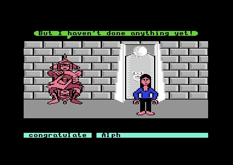
These recordings use the same room at phase 4 and conversation index 3; the lying comparison also sets the second bit to 0. The doorway reaction below uses the remembered guard from these recordings.
Sources and checks
The fourth later ASK sets a separate flag for the guard addressed. In phase 4, CONGRATULATE checks that guard’s flag before comparing the second bit with the speaker selector. Alph uses selector 0 and Ralph uses 1. Equal selects the lying reply; different selects the truth reply. Other phases use “Don't mention it,” unless a negative insult flag takes priority. The code comparison retains both guards’ presence checks with their distance input intercepted. It checks phase, flag, asked-byte and second-byte boundaries, the remembered selection, all five congratulations texts, and the insult reply. The live recordings check Alph; Ralph’s congratulations remain code-checked.
10 · The reaction at the doorway
The other guard gives the game away
In phase 4, congratulating Alph changes Ralph’s reaction at the left doorway. Ralph identifies Alph as either the guard who always lies or the one who tells the truth. Without a congratulated guard selected, the reaction is “How did she figure it out?” ($8DF8, $8E25, $8E43)
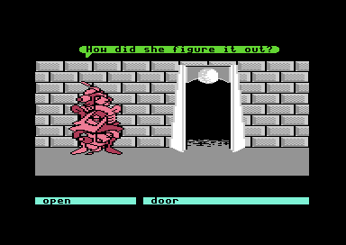
The remembered guard selects both the wording and who says it. The code flips the remembered guard’s selector to choose the other speaker. In phase 4, matching the remembered guard with the second random bit selects the lying accusation; a different value selects the truth accusation. ($8F0A, $9DC9, $9E10)
These phase-4 recordings continue the conversations above. The reaction and countdown depths are 40 and 44 because the phase changed after room setup; setup begun in phase 2 or later writes 54 and 64. The recordings stop before the phase advances. The next section continues through the load.
Sources and checks
All three trials approached X99/depth24 and opened the left map cell from 1 to 4. The reaction queued at X96/depth42. The selected-Alph trials changed the speaker selector from 0 to 1, while the unselected trial kept 0. All reached depth45, completed the existing successful countdown, and stopped at $8E9E before advancing the phase. The screenshots show completed messages. The reaction gate clears after queuing; the countdown has its own depth test. Original-code comparisons check those separate gates, both valid remembered guards and byte boundaries. All three texts are expanded by the original parser. The setup threshold prefix is checked for every phase byte. The ordinary arrival in the guard room at phase 4, Ralph-selected live departure and phases2/3 reaction dispatch remain open.
11 · The next room
Back at the Wall of Hands
From phase 4, the left door loads the Wall of Hands whichever reaction appeared. The player arrives at the same position after the generic reaction, the lying accusation, and the truth accusation. The guard phase stays at 4: its increment is capped there. ($8E9E, $59AF) Wall of Hands capture
| Saved conversation | Checked load |
|---|
| No guard congratulated | Scene 5, entry 1 |
| Alph congratulated · lying reply | Scene 5, entry 1 |
| Alph congratulated · truth reply | Scene 5, entry 1 |
The guard reaction is complete. The queued scene request is 5.
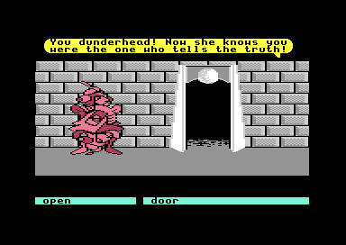
The truth-reply recording, stopped before phase advancement.The guard sequence leaves a request for scene 5. The resident load service transfers that request and supplies entry 1 when the entry byte is unset. In these trials, the service reaches the same request regardless of which of the three reactions appeared. ($8E9B, $59D1)
This continues the three phase-4 recordings above, with their earlier depth thresholds and doorway selector 1. The example switches between the recorded images.
Sources and checks
Each trial resumed at $8E9E. The original phase increment attempts 5 and caps the phase at 4. At loader entry $5098, all three had pending scene 5, entry 1, queued request $FF, and current scene 4. At return $59DC, scene 5 was installed and the entry field had returned to $FF. After 60 further frames, all were at X84/depth6 in scene 5, with phase 4 retained. The image shown is the truth-reply trial. The address range $59AF–$59DB matches the opening’s retained resident code byte for byte. Its bounded comparison checks queued/pending bytes and entry defaults with wheel-closing and loading intercepted. Real completed loads supply the arrival evidence. Guard-overlay addresses are not interpreted as guard state after scene 5 replaces that overlay.
06 · The Wall of Hands
The Wall of Hands
A wall of hands talks to you, and a manicure is how you get out. The sequence runs for nine manicures: the eighth costs an hour, and the ninth lets you down into the Stone Corridor. The conversation comes first.
The hands open the conversation themselves: “Do you realize how many people have fallen to their doom because of us?” ASK WALL continues with “Millions!” Four further questions bring the conversation back to its opening line. ($8DE4, $903D) Room capture
The automatic question and typed questions use the same reply index. The fifth reply resets the next index to the beginning, while still displaying its own text. A separate gate can reject the command with “Nothing happens” and preserve the index. Its connection to movement and hand animation remains untraced. ($8EA5, $9284)
The room opens with an automatic question, and five ASK commands follow. The example replays the recorded replies. The first MANICURE WALL response and the departure are explained below.
Sources and checks
The callback’s bounded branch increments its negative automatic flag, then calls the same ASK handler. In the saved state $FF becomes 0, so that branch supplies the opening question once. Other negative bytes can remain negative after increment; they are byte-domain checks, not reached room states. Valid reply indices 0–4 use the old index to select text, then advance 0→1→2→3→4→0. Original-code comparisons retain the command gate and its stack-discard rejection path. All five replies and the rejection text are expanded by the original parser. The values 24/4/10/14/12 stored alongside the replies have no assigned wall-clock meaning here. This part has its own snapshot, symbols and listing; shared resident ownership and its remaining loaded data are unresolved.
07 · The first manicure
The hands want shears
MANICURE WALL checks whether the player has shears. Without them, the reply is “That would have been nice, but you have no tools!” Usable shears get “A manicure? How nice of you!” A damage flag can instead stop the command with “Your shears were damaged.” ($90E2, $90C3)
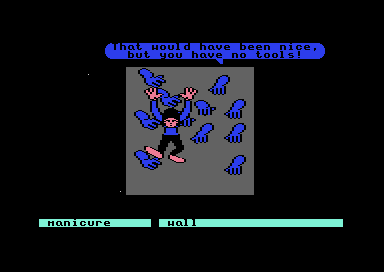
The first accepted command advances the manicure counter from 0 to 1. Both refusals leave it at 0. The item-present trials keep the shears’ stored count unchanged. A separate command gate runs before either inventory check, and can reject the command with “Nothing happens.” ($90FA, $8EA6, $9284)
Continue through the first seven accepted commands.
Sources and checks
The command queries inventory slot 21 through $0830. The real reader returns the byte at $673E; negative means absent, while 0 represents one owned unit. In the captured inventory wheel, that slot maps to dictionary entry 72, shears. A negative damage flag at $056C discards the caller continuation before the counter increment. The accepted first branch requests sound 11 and writes 9/4/16 to its animation fields. Those values have no assigned duration here. The original-code comparison retains both inventory and command checks, intercepting sound/output and supplying controlled random values. It checks the first counter state, three text records, the generic rejection, and the varied output-mode helper. The eighth command is checked below. Later stages, the damage producer, and complete animation effects remain open.
08 · Repeated manicures
The hands ask for polish and lotion
Keep using MANICURE WALL with usable shears and the hands continue talking. The hands ask for polish and hand lotion, thank the player, then ask about the green liquid they are soaking in. Each accepted command advances the same counter. ($910B, $8EA6)
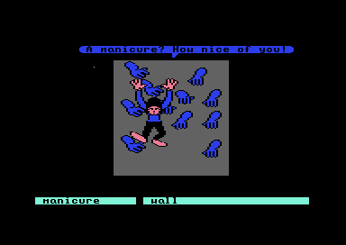
The seven accepted commands keep the shears’ stored count unchanged. The missing-tools and damage checks still run before the counter advances, so either refusal preserves the current stage. ($90E2, $90C3)
These pictures follow seven commands in one room session, starting with one shears unit in the inventory. The sequence ends at count 7. The eighth command costs an hour. The ninth leaves for the Stone Corridor.
Sources and checks
The reply selection compares the incremented counter with 2, 3, 4, 5, and 6; each match selects its own text. A count of at least 7 selects the green-liquid text before further checks. The seven checked successful calls queue their replies through the same varied output-mode helper and write the same animation values 9/4/16. Each live command released Return on the handler’s first stop, and the captured inventory byte remained 0. The comparison executes the original command gate, inventory reader, damage test, counter increment, and reply selector for initial counts 0–6, with sound/output intercepted. The eighth command is checked in the next section. Later stages and animation timing are outside this replay.
09 · One hour later
The eighth manicure costs an hour
The eighth accepted MANICURE WALL interrupts the conversation with “One hour later…” The clock loses one hour, then the Wall of Hands returns. The manicure counter reaches 8 and the shears remain in inventory. ($913B, $0C61)

The captured clock changes from 12 hours, 51 minutes to 11 hours, 51 minutes at the decrement. The hour is removed directly; the minutes stay unchanged by that operation. With zero hours remaining, the same decrement triggers the time-expired ending. ($0C61)
The first trial continues the seven-command session. A second starts with the hour byte at zero before the penalty and reaches the time-expired ending. The ninth command leads out to the Stone Corridor.
Sources and checks
The exact count-8 branch jumps through $084E to the resident penalty helper. That helper presents event 57, then decrements $0376, the hour field. A negative result clears $0580; other results preserve that state. Event 57 selects $730A, the “One hour later…” record, through its split pointers. Original-code checks retain the real command prerequisites and hour arithmetic, intercept the event presenter, and compare all hour/outcome byte combinations separately. The original selector and text parser check the panel’s record. Arbitrary byte inputs are arithmetic checks, not reached clock states. The normal and zero-hour panels were both checked live; complete event presentation and later room behavior are outside the JavaScript comparison.
10 · Leaving the hands
The ninth manicure leads to the Stone Corridor
After the hour penalty, another MANICURE WALL brings back “A manicure? How nice of you!” The counter advances to 9 and the player descends from the hands. The game then loads the Stone Corridor. ($9142, $8CD8) Stone Corridor arrival
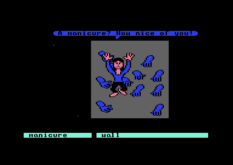
The ninth command sets movement state 12. Its downward movement reaches an exit threshold, then selects the first exit slot. In this captured room state that slot requests scene 6, entry 7. The actual arrival places the player at X480, depth6 in the Stone Corridor. ($8D81, $077E, $078E)
The ninth command descends out of the room and loads the Stone Corridor, with the shears still in the inventory. Continue to the Stone Corridor’s first door.
Sources and checks
The accepted ninth command queues the first reply again and writes 12 to $0356 and $8EA3, preserving $8EAA. The bounded movement prefix adds 4 modulo 256 to the vertical drawing byte, and calls exit slot 0 when the result reaches at least 128. The live threshold stop records 130, then selector 0 and request 6/7 before the load. The loader returns in scene 6 at X480/depth6, followed by the visible arrival capture. Original-code checks cover the ninth command, the later-count comparison, the bounded movement prefix, and exit selection. Pose advancement and elapsed animation time are outside the model. Higher counter values in tests are seeded branch inputs; an attempted ordinary tenth command did not dispatch because this trajectory left the room. The counter’s wrap and alternate entry remain open.
07 · The Stone Corridor
The Stone Corridor
The ninth manicure drops the player into the Stone Corridor. Along it stand a first door, an archway, a second door guarded by a companion, and a ladder, and this area follows them in that order.
OPEN DOOR gives “Nothing happens” at the arrival position. After the player approaches the door, the same command opens it. Repeating the command gives “It’s already opened.” The command checks the cell at the player’s column. ($8F30, $0998) Stone Corridor capture
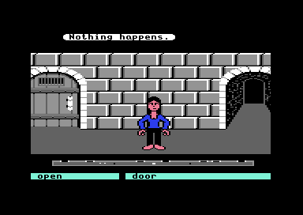
The arrival is at X480, column7, where the stored cell has value0. The ordinary approach stops at X147, column2, where the cell has value1. OPEN replaces that cell with7 and refreshes the room. Its new type produces the already-opened reply on the next command. ($071E, $073E, $8F7B)
CLOSE DOOR reverses the change: cell7 becomes1, and the door shuts. Another CLOSE gives “It’s already closed.” ($8E91, $072E)
Walking through the open doorway brings the player to another position in the Stone Corridor, beside an arch and bars. This crossing selects entry30 and refreshes scene6. The arrival is at X1952, depth6. ($4115, $07EF)
These pictures compare the arrival with an approach from the same position, then opening the door and repeating OPEN. The last comparison walks through the opened door. The guarded door’s blocked reply is explained below.
Sources and checks
This part has its own play snapshot, symbols, and listing. The cell query executes the real world-column classifier; the opening comparison also executes the real mutation wrapper and its record-update path. The page model fixes the captured negative room mode and scene6. Tests seed empty record arrays and intercept sound/output; arbitrary map bytes and coordinates are arithmetic checks, not reached states. The separate column24 branch and its companion-position check are verified in the guarded-door section below. The first-initialization hand-over remains open: the matching comparison snapshot is the later loader return. Resource matches and seven retained uncounted stretches are listed in the technical reference.
08 · Through the archway
The arch leads to a ladder
Continuing through the arch brings the player to another stretch of the Stone Corridor, with a ladder visible on the left. The route stays in the same scene. ($4115, $07FD) Stone Corridor capture
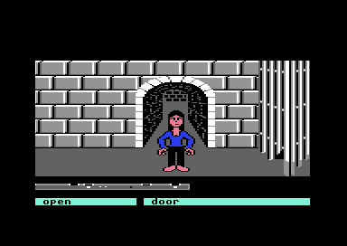
The doorway and arch select different entries into the corridor. Each entry places the player at the middle of its column: X = 64 × entry + 32. The first crossing uses entry 30; the arch uses entry 26. ($543A, $5496)
The first door’s cell stays open through both crossings. The ladder route is explained below.
Sources and checks
Ordinary up input reaches depth 70 at column 30, then requests refresh 0/entry 26 using exit slot 15 and stored selector 96. The arrival is X1696/depth6 in scene 6. A separate 300-frame no-input control stays at the arch. The page reuses the nonnegative placement calculation already checked for the first corridor; the original bytes match. Tests execute the real exit and placement prefix, retaining the map and current scene. The negative-mode placement branch, movement threshold, and other route selectors remain outside this model.
09 · Beside the ladder
A companion blocks the guarded door
Another door stands beside the ladder. On the checked approach, the companion is in its doorway. OPEN DOOR replies “He's in the way!” and the door stays closed. ($8F5A, $8F6F)
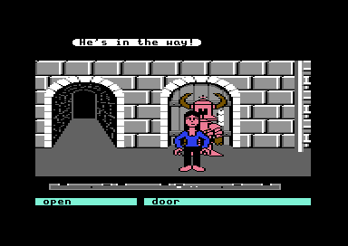
The saved route reaches the second door after the first doorway and arch. The companion is visible inside it.How to move the companion, and what follows once the door is clear, are not yet known.
Sources and checks
The player is at X1563, depth6, column24, where map cell $0618 is1. The first companion is at X1568 and depth24. The code blocks OPEN when the companion's two X bytes equal $0620 and its depth is at least22, selecting reply $987D. VICE showed “He's in the way!” with scene6 and the cell unchanged. The original code comparison checks the position boundary and expands the same reply. If the condition fails, code sets scene4 before the common door mutation; its reached outcome has not been checked.
10 · The ladder
The ladder returns to the hands
Hold up near the centre of the ladder to start climbing. Once the climb begins, the player continues without held movement input. The ladder leads back to the Wall of Hands, whose opening question appears again. ($3796, $3DF1, $078B) Wall of Hands capture
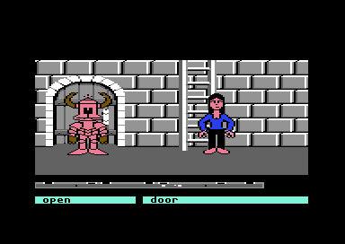
The alignment check accepts eight positions within the ladder’s 64-position column. An off-centre approach can reach the wall without starting the climb.
The accepted approach starts at X1633. The completed load reaches the Wall of Hands at X84, depth 6.
Sources and checks
The local ladder cell is type4. In negative room mode, offsets28–35 within its column clear the ladder state. The state dispatcher then calls the climb routine. Its completion selects exit slot13, bank0, requesting scene5/entry1. Ordinary input and the actual loader confirm that destination. The page compares the alignment gate with the original code; tests also execute the real dispatcher, climb and exit. Off-centre trials at X1641 and X1637 stay at depth24 after600 up frames. The captured no-input continuation after the accepted gate reaches completion. Routine calls have no assigned frame duration, and the surrounding movement prerequisites remain outside the slider model.
The Hedge Maze: the goblin
Read from code
The goblin has one of four kinds
The goblin’s kind is a number from 0 to 3, chosen at random ($9A0E, $99FA). The kind decides how it answers. HIT goblin brings a cry for its mother (“MOMMY! MOMMY! ! ! ! !”) from kinds 1 to 3. INSULT goblin gets “That won’t work with me!” from kind 0, “Why you . . .” from kind 1, “I will get you for that!” from kind 2, and “HUH?” from kind 3. ($8F1B, $8FBB)
Gifts work on one kind each. A rock pleases kind 3 (“Oh!, a rock!”) and a bag of popcorn pleases kind 2 (“Why, thank you!”). Every other kind answers “Hah!” and still takes the item. CONGRATULATE goblin gets “Nothing happens.” from kinds 0 and 1, “Hmph.” from kind 2, and “Gee, that’s nice.” from kind 3. ($8D46, $8D85, $8ECF)
The shears work on doors and walls, and break on rocks
OPEN door and CLOSE door swap the hedge door’s map cell for the open or closed form, and a second try gets “It’s already opened.” or “It’s already closed.” ($8F7B, $8F9A) MANICURE door, MANICURE wall, and USE shears start a seven-step trimming animation. At the end, a door opens only if the player stands close enough (“Try moving closer.” otherwise), a wall earns “Want a job as a gardener?”, and rocks damage the shears for good. Without shears the reply is “You have nothing to manicure with.” ($9077, $90A4)
Four spoken words are trades
SPEAK avocado, jaggies, owl, or plastics gets “I won’t help you!”, “Save it for when you REALLY need it.”, or, when a counter allows it, “So be it, you are freed in exchange for 1 hour of time.” After that last reply the game waits and plays a sound. What the two flags behind these replies count is not identified. In an emulator test with the goblin forced into reach, “avocado” gave “Save it for when you REALLY need it.”, while “owl”, “jaggies”, and “plastics” gave only “Nothing happens.” Why those three differ is not known. ($9CDA, $9D0A)
The first hedge corridor of this overlay, from a forced load.Sources and checks
Command table $8B00, handlers $8BC0; goblin routines $8F1B, $8FBB, $9A0E; shears $9077; texts $91C9 to $99D8. Exits are read from the tables at $077E to $07FD. On 25 October 2026 the goblin replies to HIT, INSULT, and CONGRATULATE were checked in the emulator for all four kinds, with the goblin made present by setting $0252, $02F5, and $0544 by hand; every reply matched the text above. Gifts, shears, and door cells were not reached.
The Persecution of Ludo
Read from code
Ludo is freed with the shears, but only after the goblins are gone
MANICURE Ludo starts the shears routine. If either goblin is still active the game answers “Maybe you’d have time if you got rid of the goblins first!” Once both are gone it shows “Congratulations! You have set Ludo free! Sir Didymus will be pleased.” and loads the next scene. If the player is not in one of those four cells the reply is “Ludo is too far away.” ($8F68, $8F86, $8F95)
Ludo answers every other command with a growl: ASK, CALL, CONGRATULATE, and INSULT bring “Ludo down!!!”, and HIT brings “No scratch Ludo! Ludo down!!” when the player stands in one of the four cells beside him (anywhere else HIT gets “Nothing happens.”). GIVE to Ludo, when he is near, gets “Ludo don’t want. Ludo down!!!” ($8FC3, $8FD4, $8FEE)
Two goblins react to the same commands
HIT goblin and INSULT goblin each start a short reaction for the nearest goblin, cost an opening bonus point, and bring “MOMMY! MOMMY!” or “HUH?”. CONGRATULATE goblin gets “Gee, that’s nice.” and CALL goblin “I’ll get you yet!” A goblin has to be within range for these commands, or the reply is “There is no one here.” How a goblin is removed is not shown by the command handlers alone. ($8E64, $8E87, $8E44, $8D75, $90D3)
The capture of the maze with the three characters.Sources and checks
Handlers $8CFD to $913F; Ludo routines $8F68 to $8FEE; goblin slots $994D to $9A80; texts $9157 onward. The scene request at $8F95 is scene $0A (10) with entry 1. Emulator check (25 October 2026, scene loaded by force with the goblin and shears state poked): ASK, CALL, CONGRATULATE, and INSULT Ludo gave “Ludo down!!!”; HIT Ludo gave “No scratch Ludo! Ludo down!!” in the cell $27; MANICURE Ludo gave “Ludo is too far away.” from far off and “Maybe you’d have time if you got rid of the goblins first!” beside him with goblins active, and with both gone it requested scene 10 (the Hedge Maze title card). GIVE to Ludo was not reached.
The Wise Man’s Garden
Read from code
The hat wants a donation before the Wise Man talks
ASK Wise Man starts a donation. The hat says “Please place your donation in the box.” and the Wise Man answers a second ask with “You again, cheepskate? No wisdom until you pay up.” until the debt is paid. Insulting or hitting the hat adds one more to the debt (“Just for that you pay double!”). When the debt is paid, one of four thanks is picked at random: “Thank you, now step aside.”, “Now move along.”, “Run along now.”, or “All right, now scoot!” ($8FC1, $90AD, $9060)
Each hint matches a walking test on the nine cells
The first ASK Wise Man picks one of eight hints at random and runs the test that goes with it every frame while the player walks the cells. The hints are “The way out is all that is left.”, “The right door’s the only one on the left that’s left when the left door and the on…”, “The only way out is to be right in every way you can.”, “Even the right door is only correct one time in three.”, “If at first you don’t succeed, try, try again.”, “Thoroughness is a virtue, but order is paramount.”, “The hands of the clock trace the path to the ninth hour.”, and “If you go to the left first, then you will know the bloomin’ way out.” ($8FC1, $90DE)
The tests are of four kinds. Two of three cells in the first row, or in the last row, opens the exit at the cell not yet stepped on. Stepping on the same cell twice opens its exit, in either the last row or any row. Walking eight steps around the ring of cells in one direction, or going up the ring one cell at a time, opens the exit beside the last cell. A single step on cell 0 opens cell 4. A broken walk clears every counter and starts again. ($9112, $9136, $9159, $917D, $919D, $9210, $9223, $9253)
The hat and the Wise Man talk back
Both need you close: otherwise the reply is “Come over here. We’re not about to come to you!” ASK hat gets “Don’t ask me, I’m only a hat!”, CALL hat “I may be a hat, but I can hear!”, and CALL Wise Man “He may be old, but he’s not deaf!” MANICURE the hat or the Wise Man gets “Stay away from me with that thing!” Between the sequence steps the hat’s idle remarks (“Did you hear that?” to “Who wrote his lines?”) come from a table of eight. ($8FA1, $9099, $90A3, $90D1, $92CD)
The Wise Man’s Garden, from a forced load.Sources and checks
Sequence dispatcher $90DE with its eight steps; exit opener $922E; hint tables $929D to $92C9; texts $9945 to $9E33. The exit scene byte at $8D39 is set by setup to $0A, $0F, or $10. Emulator check (25 October 2026, scene loaded by force, player walked beside the Wise Man): far away every command gave “Come over here. We’re not about to come to you!”; close up the first ASK Wise Man gave the hint “Thoroughness is a virtue, but order is paramount.”, the second “You again, cheepskate? No wisdom until you pay up.”, ASK hat then showed “Please place your donation in the box.” after a short delay, CALL hat and CALL Wise Man gave their lines, and INSULT hat gave “Just for that you pay double!”. Paying, the thanks lines, and the exits were not reached.
The Hedge Maze: Ludo and the rocks
Read from code
Ludo comes when called, and perfume keeps him away
CALL Ludo replies “He’s coming.” and starts him moving toward the player. If he is already near, the reply is “He’s already here.” Perfume changes this: with perfume on, CALL Ludo is answered with “Smell bad!” or “He won’t come. Your odor is overpowering.”, and a short delay after the perfume is used the screen says “Smell bad!” on its own. ($918B, $91EB, $8F48)
HIT Ludo is scratching him. The four hit replies are “Ludo like!”, “Please scratch higher.”, “Please scratch lower.”, and “No more scratch Ludo.”, picked by a hit count that stops at 3. The other commands get “Ludo friend!” for ASK, “Ludo don’t understand.” for INSULT, and “Ludo don’t want.” for MANICURE. ($91FB, $91DF, $9232, $923E)
Calling the rocks makes Ludo shout, and the rocks roll
CALL rocks starts a 20-step countdown. At the end Ludo’s shouting rolls a pile of rocks in from one side, with the text “Ludo is making a tremendous racket. It’s enough noise to cause the rocks to roll!” A second CALL while a pile lies on the ground says “The last rocks Ludo called are still here.” If the carried rocks have reached eight, the reply is “You can’t carry any more rocks.” ($8F55, $8F6E, $8F79, $8DF7)
TAKE picks up the pile (“You take the pile of rocks.”), adding three rocks to the inventory. If six or more are already carried, the reply is “You take as many rocks as you can hold.” If the player stands too far, “They’re too far away.” ($9058, $907C) USE camcorder while a pile is in view records it (“You video tape a bunch of rocks. Nice.”) and sets a flag; that rock video is what Firey asks for in the forest. ($90AD)
The hedge wall of this scene, from a forced load.Sources and checks
Rock routines $8F55 to $8F96 and $8D8E to $8E56; Ludo routines $918B to $9232; TAKE $9058; texts $94D1 onward. Emulator check (25 October 2026, scene loaded by force, byte $0565 set to $FF to stand for a freed Ludo): with Ludo away every Ludo command answered “Ludo is hanging around somewhere else.”, and CALL rocks gave the gag “Here, rocks! Here, rocks! They don’t seem to answer.” (then “What would you like to call them?” on a repeat). With Ludo called in, CALL Ludo gave “He’s coming.”, ASK “Ludo friend!”, INSULT “Ludo don’t understand.”, MANICURE “Ludo don’t want.”, and HIT the “Please scratch higher.”, “Please scratch lower.”, “No more scratch Ludo.” series. CALL rocks with Ludo beside the player showed “Ludo is making a tremendous racket…” within a few seconds, and a repeat gave “The last rocks Ludo called are still here.” Not reached: TAKE, the rocks themselves, perfume, USE camcorder.
The Door Knockers
Read from code
The knockers speak only when the door is closed
The room has two doors, each with a knocker, and the code tracks the player’s horizontal position as a value from 0 to 3, and positions 1 and 3 are the two knockers. Standing at position 2, between them, gets “Who are you talking to? Please step closer.” A knocker needs you close, or the reply is “You’re too far from it.” ASK and INSULT work only from position 3: from position 0 or 1 the knocker answers at random with “What?”, “I can’t hear you.”, “Again please?”, or “Speak up.” With the door open, the hint is “Close the door so the knocker can talk.” ($91E1, $921A)
ASK knocker starts a spoken hint, beginning “Remember, if you get trapped,”, and the knocker finishes with one of eight, such as “Two bits will buy you almost anything.”, “A door isn’t always a door.”, “Cross any color but red!”, or “Food can be helpful when you are stuck.” ($910E, $8D7B)
Insulting a knocker starts a knock-knock joke
INSULT knocker picks one of eight jokes at random. The jokes run “Knock knock.” / “Who’s there?” and then name the speaker: Lil’ Abby, Hoggle, Sir Didymus, Ludo, Goblin, A maze, Romeo, or Jareth. Jareth’s punch line is the angry “What do you mean, ‘Jareth who’! It’s MY Labyrinth!” ($9000, $9014)
Four items fit the knockers’ mouths and locks
INSERT key works at position 1: it uses up the key and changes the door’s map cell by adding two. INSERT ring and INSERT bracelet need the knocker at position 3: a closed mouth gives “His mouth is closed.” and a full one “Its mouth has something in it.” Otherwise the item is taken and the cell is restored by subtracting two. A ring in place of a bracelet says “So it wasn’t a bracelet after all!” INSERT popcorn and GIVE popcorn put popcorn in an empty mouth; with an empty box the reply is “All you have is an empty box.” If the ring is gone, OPEN door says “You can’t open the door, the knocker ring is gone.” ($917B, $9127, $91A9, $8EBA)
The door knockers, from a forced load.Sources and checks
Knocker routines $8FF1 to $91A9; side check $91E1; joke table $9014; texts $9889 to $9D5A. The joke index is the byte at $8D79. Emulator check (25 October 2026, scene loaded by force, walking with the joystick): at position 2 ASK and INSULT gave “Who are you talking to? Please step closer.”; at position 1 ASK and INSULT gave “Again please?” and “Speak up.”; at position 3 ASK gave “Remember, if you get trapped,” and OPEN door gave “You can’t open the door, the knocker ring is gone.” Not reached: the jokes, INSERT, GIVE popcorn, the shears.
The Forest: Firey and the thrown head
Read from code
Firey wants a rock video
ASK Firey and GIVE (any object) get “We want a ROCK VIDEO!” until the player has given him a camcorder that holds a rock video. GIVE camcorder with an empty tape gets “I don’t want this boring stuff, get me a rock video.” With the rock video, Firey says “Oh thanks! Let me give you a piece of my mind.” and the camcorder is taken. ($8D39, $8D62, $8CFF)
After that ASK Firey answers “I’ve got something for you!” while fewer than three gifts have been taken, and “You’ve taken enough!” at three. The code holds the offers “Let me give you a piece of my mind.”, “Let me lend you a hand.”, and “Now he is a foot shorter.” HIT Firey and INSULT Firey get “Hey, that’s not nice!” and cost an opening bonus point; CONGRATULATE Firey gets “Like, thanks, that’s nice.” and earns one. ($8D39, $8E69, $8EEB)
Throwing the head shows what lies ahead
THROW head starts a short flight. When it lands, the reply describes the region ahead: “Wow! I see an old man in a chair!” (the garden of the Wise Man), “I see a bunch of hedges!”, “I see two funny doors!” (see the door knockers), “Yuck! Does that look disgusting!”, or “I just see more trees.” Thrown from too far in, the reply is “You can’t throw it in there!” ($8FFB, $9017)
CALL Firey brings “I’m coming!”, or “I’m here already!” once he is within range. CALL Ludo and CALL rocks only get the gag replies “He doesn’t answer.”, “Ludo is hanging around somewhere else.”, and “Here, rocks! Here, rocks! They don’t seem to answer.” ($8DB1, $8E0E, $8E21)
The forest, from a forced load.Sources and checks
Firey routines $8CFF to $8EEB; head throw $8FFB, $9017; texts $930B to $9A2B. Exit selectors are at $076E and the four exit banks at $077E to $07FD. Emulator check (25 October 2026, scene loaded by force, Firey not on screen): CALL Firey gave “I’m coming!” and later “I’m here already!”, ASK Firey gave “We want a ROCK VIDEO!”, CALL Ludo and CALL rocks gave the gag replies, HIT Firey gave “Hey, that’s not nice!” once, and HIT, INSULT, or CONGRATULATE otherwise gave “There’s no one nearby.” or “He’s not here.”, so those three need Firey within range. THROW head without the head gave “You can’t throw that!”. Not reached: the camcorder trade and the head throw.
The Forest: the second strip
Read from code
This scene’s code, text, pictures, font, and costumes are byte-for-byte those of the first forest strip, so every command there behaves the same here. Only the 64-cell map and the exit tables differ. Counting all four exit banks, the first strip sends 4 entries to scene 9, 2 to scene 10, 7 to scene 11, 4 to scene 13, and 13 to scene 16; this strip sends 4, 2, 3, 4, and 4. ($8D39, $8FFB)
The second forest strip, from a forced load.Sources and checks
Same overlay as scene 12; exit tables $077E to $07FD differ. Entry counts per destination are read from the four exit banks.
The Stone Faces
Read from code
The faces warn you off as you come near
Standing close to the wall brings one of sixteen random warnings, once per approach. They include “I’d turn back if I were you!”, “Abandon all hope all ye who enter here!”, “Certain death is ahead!”, “Beware! Beware!”, and “Lasciate ogni speranza voi ch’entrate!” ASK wall, CALL wall, and CONGRATULATE wall give another warning. ($8FAA, $8CBA, $8FA5)
Hitting a face gives one of four hints, then repeats
HIT wall or INSULT wall picks one of four hints, chosen at random from 18 when the scene starts. The face says “Sorry, just doing my job. Here’s something you’ll really like:”, shows the hint, and ends “But don’t tell Jareth I told you!” A hint already given is introduced with “We already gave you the hint:”. ($8FC0, $8FF3, $8DB8, $8DBE, $8D27)
The 18 hints are: “Defeeting a Firey will make you sure-footed.”, “You’ll need to arm yourself to enter the castle.”, “To enter the castle, you must first disarm a Firey.”, “Two heads are better than one.”, “To see the castle you will need to get a head.”, “It helps if great things are afoot.”, “Within every lump of wood lies beautiful music.”, “There’s music in the trees.”, “If you don’t C sharp you’ll B flat.”, “Heavy rock lovers make great videos.”, “A sweet smell can do much for unwelcome ones.”, “The unencumbered tight rope walker has the best balance.”, “Don’t knock the jewelry.”, “Goblins are short sighted.”, “Disguises sometimes work.”, “Jareth can’t take his own medicine thrown at him.”, “Open the log to reveal the hidden key.”, and “Make a logjam for safety.” ($903E, $9050, $9062)
The stone faces, from a forced load.Sources and checks
Warnings $8FAA; hint logic $8FC0 to $8FF3; hint tables $903E to $9062; texts $9764 to $9CE5. The pick list at $8DB8 is replaced by four distinct random values at setup. Emulator check (25 October 2026, scene loaded by force with entry 20, which puts a face on the left): HIT wall gave “Sorry, just doing my job. Here’s something you’ll really like:”, ASK wall “I’d turn back if I were you!”, CALL wall “It will soon be too late!”, CONGRATULATE wall “Take heed and go no further!”, and INSULT wall “We already gave you the hint:”. With entry 35 the scene shows a plain brick wall and the ordinary wall replies (“Ouch! You hurt your hand.”) come instead. The hint lines themselves were not read off the screen.
The Bog of Eternal Stench
Read from code
This scene’s overlay differs from the Ludo maze’s by only seven state bytes. Every handler there, including freeing Ludo with the shears and the goblin reactions, is present here, and the exit table is the same: region 0 requests scene 10 and region 1 requests this scene. ($8F68, $8F95)
The capture shows Sir Didymus beside a ladder. Neither the speech nor Sir Didymus is described by this scene’s text records, so the picture comes from the loaded resources, not from these handlers.
The cave with Sir Didymus, from a forced load.Sources and checks
Same bytes as scene 8 except seven state bytes; handlers and exits as for scene 8. Emulator check (25 October 2026, scene loaded by force with entry 35, which shows a hedge maze with a goblin tree, not the ladder): HIT goblin gave “MOMMY! MOMMY!”, CONGRATULATE and CALL goblin “There is no one here.” when the goblin was away, ASK Ludo “Ludo down!!!”, and MANICURE Ludo “You have nothing to manicure with.”
The Goblin Village
Read from code
Two goblins move on their own and catch you
Two goblin slots each hold a mode, two counters, and a last move from 1 to 8. A goblin picks its next move either by turning one step around the ring of eight directions or, while the helmet is on and no perfume is worn, at random, which fits the hints “Goblins are short sighted.” and “Disguises sometimes work.” Wearing perfume instead starts a countdown with a random length, and each time it runs out the screen says “Oh! He smells awful! Get him!” ($9834, $986A, $98F3, $97F3)
HIT goblin sets a short reaction (“MOMMY! MOMMY!”), INSULT goblin “HUH?”, and CONGRATULATE goblin “Gee, that’s nice.” Each needs the goblin within range, or the reply is “There’s no one nearby.” CALL goblin gets “I’ll get you yet!” ($8E7C, $8E9F, $8E5E, $8D76, $9048)
Calling the elephant draws a block of tiles
Once an elephant has been adumbrated, CALL elephant draws a 12 by 9 block of tiles over the village, with a sound, whenever the state byte $0343 is not negative. Before that, the reply is “Elephant? There’s no elephant inside the Labyrinth.” ($8DC2, $8DF3, $9B0E) What the tile block shows has not been identified.
The goblin village, from a forced load.Sources and checks
Goblin routines $97F4 to $9998; elephant tile block $9B0E; texts $90A9 to $9C06. Exit selectors at $076E. Emulator check (25 October 2026, scene loaded by force with entry 35, no goblin near): HIT, INSULT, CONGRATULATE, and CALL goblin all gave “There’s no one nearby.”, as the page says. The goblin reactions and the chase were not reached.
The Underground
Read from code
The log blocks a door only where the map has a door
DROP log and USE log check the map cell under the player. On a door cell (class 0) the cell is replaced, the log leaves the inventory, and a sound plays. Anywhere else the reply is “You can’t block the door.” ($8E8C) The hint in the stone faces is “Make a logjam for safety.” ASK door, CONGRATULATE door, and INSULT door get “Nothing happens.”, “The door seems rather board.”, and “The door is not open to criticism.” ($8F04, $8F61)
A patch of wall changes colour in steps
While the player stands in a zone near the wall (deep enough, and within a range of columns), a hook fills 16 colour cells in a step from 7 down to 1 on each entry, and refills them with one colour when the zone is left. The change shows one step per entry, not a continuous fade. What the colours mean in the story is not identified. ($99A1, $99C5, $99D0, $99F7)
The overlay also holds a moving object that switches between two headings and a three-step sequence once the player is deep in the picture. Their purpose is not identified. ($8D19, $8E13) Jareth’s only line here is “I’m quite delighted you find my humble Labyrinth to your liking.”
The underground wall, from a forced load.Sources and checks
Log handler $8E8C; zone hook $99A1 to $99F7; texts $92D0 to $97C4. Exit tables $077E to $07FD. Emulator check (25 October 2026, scene loaded by force with entry 35, no door on screen): INSULT door gave “The door is not open to criticism.”; ASK door and CONGRATULATE door gave “There’s no door here.” (the other replies need a door cell); DROP of an item that is not the log gave “You can’t drop that here, Jareth hates litterbugs.” The log, the wall patch, and the exits were not reached.
The Castle of the Goblin King
Read from code
The nerd talks in a 22-line monologue
Woken, the nerd speaks one line every 30 updates, from “You know it’s really amazing how” through a story about being locked in a closet by his sister Kim, to “Oh! You weren’t listening! No problem, I’ll start over from the beginning!” If the player gets too close while he talks, the screen says “The nerd is driving you up the wall!” While the walking-view state byte $0343 is negative, ASK nerd and CALL nerd only bring “Shh! You’re ruining my concentration!” or “He is busy watching a movie.”; in the other view they wake him. ($9090, $90A7, $9902, $9937, $9955, $996B)
Ludo’s noise rolls the rocks, but he leaves if you smell
CALL Ludo starts a noise sequence (“He’s coming.”). With perfume on, he refuses (“He won’t come. Your odor is overpowering.”) and later leaves (“Smell bad! Ludo leave!”). Left alone, the sequence ends with “Ludo scared! Ludo not come closer!”, and CALL rocks first answers “Maybe they’d come if you could yell louder.” If eight rocks are already carried, CALL rocks says “You can’t carry any more rocks.” ($8FF0, $8D62, $8E8A)
Throwing an object starts a target game
THROW crystal ball, head, helmet, or rock share one routine. It refuses outside the walking view (“Impossible!”) and while no rocks roll (“First get the rocks.”). A thrown helmet that was stuck to the head comes unstuck (“It came unstuck!”). The routine then runs a sequence against five moving targets that turn at set limits. Each hit lowers a counter and a kill-count; a hit at one of two positions raises a digit on screen. ($90EA, $9108, $9CF3, $9D90, $9E3E)
The door answers the key, the log, and the arm: INSERT key and USE log both apply a door effect, and USE arm works only within reach (“Your arm’s too short to reach it.” otherwise). The door’s default replies are “There is no door here.”, “The door’s unmoved.”, and “Don’t knock it!” ($8EC9, $8ED4, $8F0E, $8E5D, $8E6A)
The castle wall and door, from a forced load.Sources and checks
Nerd monologue $9902, tables $9955 and $996B; throw routines $90B6 to $9108; target game $9CF3 to $9EE7; door handlers $8EC9 to $8F26. Emulator check (25 October 2026, scene loaded by force with entry 35): ASK nerd gave “Shh! You’re ruining my concentration!”, CALL nerd “He is busy watching a movie.”, CALL Ludo “His line is busy.”, and CALL rocks “Maybe they’d come if you could yell louder.”; the last two are gag replies for Ludo and the rocks being away. The monologue, the throwing game, and the door were not reached.
The Secret Corridor
Read from code
The door is locked, and the helmet is a disguise that is refused
OPEN door at the door answers “The door is locked.” until the key has been used, and “It’s already opened.” afterwards. INSERT key or USE key at a door cell, deep enough in, uses up the key and plays a sound; elsewhere the reply is “There’s no place to insert it.” Once the door is open, standing at it with the helmet on (it is “stuck to your head”) brings “I will not face one who looks that silly! Enter without your disguise.” once, and again only after the player has stepped away. ($8D01, $8F3F)
Hitting the wall plays a note
HIT wall at a wall cell plays a pitch picked from a 64-entry table by the player’s position, grouped into six bands of about nine columns each, and by the row. Outside the zone it only makes a sound. The plank is a second instrument: INSERT plank or USE plank near the wall starts an eight-step sequence that restores a map cell and plays a pitch. Too far away the reply is “You’re not close enough.” ($8E86, $97BE, $8EEA)
The door’s other replies are the common ones: “The door seems rather board.” for CONGRATULATE door and “The door feels your verbal attack is unjustified.” for an insult. ($8E23)
The corridor, from a forced load.Sources and checks
Disguise check $8D01; key $8F3F; wall $8E86 with table $97BE; plank $8EEA; texts $918F to $974A. Emulator check (25 October 2026, scene loaded by force with entry 35): OPEN door gave “There’s no door here.” away from the door, HIT wall “Nothing happens.” outside the zone, CALL Ludo “He’s tied up right now.”, and INSERT with something that is not the key “There’s no place to insert it.” The locked door, the note zone, the disguise refusal, and the plank were not reached.
The Upside-Down Room
Read from code
Jareth speaks first, and force does not work
On arrival Jareth says “So, you’ve finally made it to my castle. Think you’re clever? Your hours have become minutes.” HIT Jareth within reach gets “You can’t defeat me with force. Your hands pass right through me!” and farther away “No one can reach that far!” His other replies include “You think you can defeat me with words?”, “You’re really grasping at straws!”, “Do you think I’m a door?”, “Ludo is not here to help you now!”, and, for the cup, “So you’ve decided to return my cup did you? Did you have fun with it?” ($90A3, $916C, $9176)
The crystal ball is the weapon
THROW crystal ball starts a throw. When it lands the game plays a short tune and says “You hit Jareth with the crystal ball, but it’s not over yet!” THROW head and THROW rock follow the same routine with a different sound and a delay. Anything else gets “You can’t throw that!”, ($91CC, $91D2, $91DE, $91E2, $90D3)
The nerd hints, until you insult him
ASK nerd without a crystal ball gets “How do you expect to win without a crystal ball?” and with one “Why don’t you hit Jareth with a crystal ball already!” CALL nerd gets “Hey, this is great stuff!” HIT nerd or INSULT nerd gets “Ok then, I won’t help you!” and after that every nerd command answers “I’m not talking to you.” ($918E, $91A6, $91B0, $91BD)
Four actors move over a graph of nodes
The room is a graph of nodes with direction flags. Actor 0 (the player) steers by the joystick direction, actors 1 and 3 trail it, and actor 2 chases it, keeping a distance that switches between two limits ($A0, then $50). If actor 2 overlaps the player, the followers are cleared and actor 3 stops. ($8C95, $8CB3, $8DAC, $902A)
The Upside-Down Room, from a forced load.Sources and checks
Jareth’s replies $916C to $91E2; nerd $918E to $91BD; movement engine $8C95 to $902A; texts $92AC to $9841. Emulator check (25 October 2026, scene loaded by force with entry 35): HIT Jareth from far away gave “No one can reach that far!”, GIVE to Jareth the same, ASK Jareth “It’s pointless to ask. You’ll never better me!”, ASK nerd “How do you expect to win without a crystal ball?”, CALL nerd “Hey, this is great stuff!”, HIT nerd “Ok then, I won’t help you!” and, after that, ASK nerd “I’m not talking to you.” (the first command typed after a forced load answers “That won’t work!”, so the ASK was typed twice), and THROW with nothing throwable “You can’t throw that!” The crystal ball hit and the way to scene 26 were not reached.
The Final Confrontation
Read from code
Six phrases lead to the same ending
Jareth opens with “I am still your master and you must remain with me until the end of time.” The scene replaces the command wheel with one built for this fight, and six phrases play it: YOU HAVE NO power over me, DO YOU HAVE power over me, DO YOU HAVE towels over me, THROW SOME power over me, THROW SOME towels over me, and YOU HAVE NO towels over me. Each starts a reply with sound 28, sets a different pose for Jareth, and then counts down 21 updates. ($8CC9, $8DC2, $8DDD, $8DED, $8E10, $8E1E, $8E3E, $8CF6)
When the countdown ends the win ending plays a tune and shows “Congratulations! You have defeated Jareth. You proudly walk back to your seat at the theater where the cute girl is waiting for you.” ($8E5F)
Leaving the safe range ends the game
Each row of the ledge has a safe range of positions. If the player’s position falls outside it, a nine-step fall begins, ending with “You fell off the edge and met your doom! And you were SO close to defeating Jareth!” ($8EAB, $8CAD, $8EDA, $8ECA, $8ED2)
The ledge with Jareth, from a forced load.Sources and checks
Update $8C99; command handlers $8DC2 to $8E3E; endings $8E5F, $8EDA; edge check $8EAB; word-wheel descriptor $8F2B. Texts at $902C, $907F, $90FD. Emulator check (25 October 2026, scene loaded by force with entry 35): the capture opens with Jareth saying “I am still your master and you must remain with me until the end of time.” and the command line reads “Throw some power over me”, as the word wheel describes. In the same forced load the player began outside the ledge’s safe range, and after a few seconds the game showed “You fell off the edge and met your doom! And you were SO close to defeating Jareth!”, as the page says. The win ending was reached in a second forced load, with the safe range widened and the reply countdown at $8D9A set to 2 by hand: the game then played the tune and showed the win text word for word, “Congratulations! You have defeated Jareth. You proudly walk back to your seat at the theater where the cute girl is waiting for you.” Typing “throw some power over me” did start the countdown at its first value, but the 21 steps of the reply then drew garbage and the emulator stopped at a BRK in the costume area; that load did not come through the earlier scenes, so this is more likely a forced-load artefact than a game fault, and the reply animation was not seen to the end.